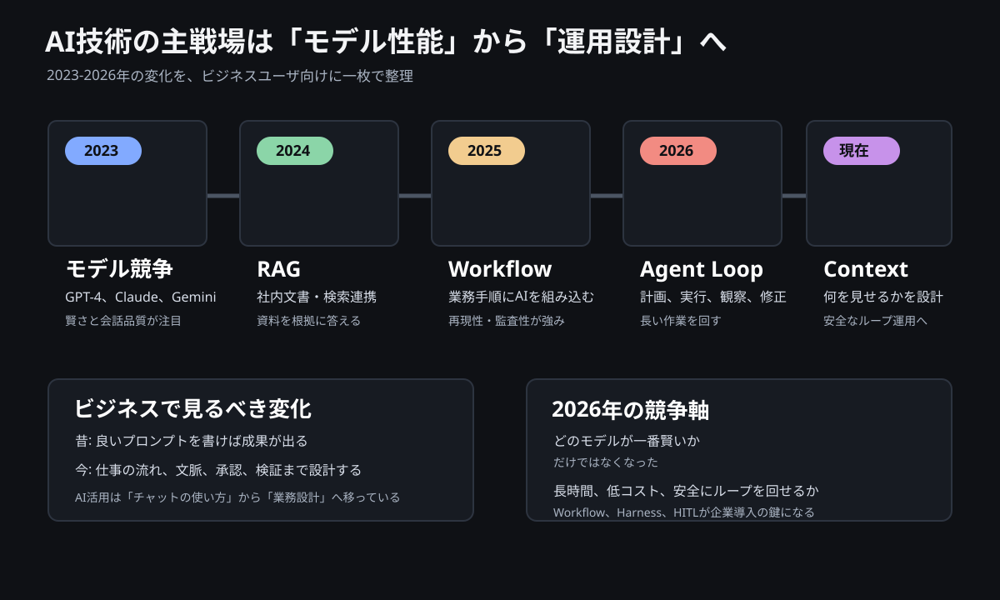

2026年時点のAIトレンドをビジネス視点で整理する
ここ2年で、AI活用の主戦場は大きく変わりました。
2023年から2024年にかけては、話題の中心は「どのLLMが賢いか」でした。GPT-4、Claude、Geminiのようなモデルそのものの性能、コンテキスト長、RAGによる社内文書検索が注目されました。
しかし2025年から2026年にかけて、焦点はモデル単体から、AIをどう業務に組み込むかへ移っています。

いま重要なのは、AIに一回質問して終わることではありません。
AIにどの情報を見せるか。どの手順で作業させるか。どこで人間が承認するか。失敗したときにどう止めるか。
つまりAI活用は、チャットの使い方から、業務システムの設計へ移っているということです。
年表で見るAI活用の変化
| 時期 | 主役 | 何が変わったか |
|---|---|---|
| 2023年 | Prompt Engineering / 単発LLM | 良い質問を書けば、AIが良い回答を返すという使い方が中心 |
| 2024年 | RAG / ファイル検索 | 社内文書や外部情報を検索して、根拠をもとに回答する使い方が広がった |
| 2025年 | Workflow | AIを業務手順の中に組み込み、分類、抽出、作成、承認をつなげる使い方が増えた |
| 2026年 | Agent / Agent Loop | AIが計画、実行、観察、修正を繰り返し、長い作業を進める方向に進んだ |
| 現在 | Context Engineering / Harness / HITL | AIに何を見せ、どう制御し、どこで人間が止めるかが重要になった |
この流れを一言でいうと、AIは「賢い回答者」から「管理された作業者」へ変わっているということです。
第1世代: 単発LLM
単発LLMは、もっとも基本的なAIチャットの形です。
質問
↓
LLM
↓
回答
ChatGPTに質問して、文章で回答をもらう使い方がこれです。
できること
- 文章の要約
- メールや議事録のドラフト
- アイデア出し
- 翻訳や言い換え
- 簡単な調査観点の整理
できないこと
- 社内の最新情報を勝手に探す
- 長い業務を最後まで安定して進める
- 過去の会話や資料を常に正確に覚える
- 外部システムを操作する
不得意なこと
単発LLMは、短い作業には強い一方で、長い作業や複数ステップの業務には弱いです。
たとえば「この資料を読んで要約して」は得意ですが、「顧客を調べ、競合を比較し、提案書を作り、不足情報を再調査して完成させて」は不安定になります。
第2世代: RAG / ファイル検索
RAGは、検索で見つけた情報をAIに渡して回答させる仕組みです。
質問
↓
検索
↓
LLM
↓
回答
NotebookLM、Copilotの知識検索、社内文書検索型チャットはこの考え方に近いです。
できること
- 社内文書をもとに回答する
- PDFや議事録から該当箇所を探す
- 根拠資料を引用する
- 最新資料を参照して要約する
- 過去資料を横断して類似情報を探す
できないこと
- 資料に書かれていないことを正しく補う
- 散らかった資料を自動で正しい社内知識に変える
- 権限や機密情報の扱いを勝手に判断する
- 業務を実行する
不得意なこと
RAGは、検索対象の品質に強く依存します。
ファイル名、版数、顧客名、案件名、メタデータが乱れていると、AIの回答も不安定になります。RAGは「資料を探して渡す仕組み」であって、ナレッジマネジメントそのものではありません。
第3世代: Workflow
Workflowは、AIを業務手順の中に組み込む考え方です。
Step1
↓
Step2
↓
Step3
↓
結果
たとえば、問い合わせ対応なら次のようになります。
メール受信
↓
分類
↓
必要情報取得
↓
返信ドラフト
↓
承認
できること
- 定型業務を安定して処理する
- 作業手順を明確にする
- テストしやすくする
- 監査しやすくする
- 人間の承認を途中に入れる
できないこと
- 想定外の業務を自由に解決する
- 目的だけを渡して完全自律で進める
- 業務設計なしに成果を出す
不得意なこと
Workflowは、決まった手順には強いですが、状況に応じて大きくやり方を変える仕事には弱いです。
ただし企業利用では、この弱さはむしろ利点でもあります。勝手に判断しすぎないため、業務システムに組み込みやすいからです。
第4世代: Agent
Agentは、目標を与えると、AIが計画を立てて作業を進める考え方です。
目標
↓
計画
↓
実行
↓
再計画
↓
実行
↓
終了
たとえば「新規顧客を調査して提案のたたき台を作って」と依頼すると、検索、資料作成、不足情報の発見、再検索、資料更新を自律的に行うイメージです。
できること
- 複数ステップの作業を進める
- 途中で不足情報を見つける
- 必要に応じてツールを使う
- 調査、整理、作成をまとめて行う
できないこと
- 常に正しい判断をする
- 企業ルールを暗黙に守る
- コストや時間を自然に最適化する
- 重要な意思決定を任せきる
不得意なこと
Agentは自由度が高い分、暴走、コスト増、再現性の低さが問題になります。
同じ依頼でも毎回違う進め方をすることがあります。企業で使う場合は、どこまで任せるか、どこで止めるかを明確にする必要があります。
第5世代: Agent Loop
Agent Loopは、Agentが一度作業して終わるのではなく、計画、実行、観察、反省、再計画を繰り返す考え方です。
Plan
↓
Act
↓
Observe
↓
Reflect
↓
Plan
コード生成ツールでよく見られる動きです。
コード生成
↓
テスト
↓
失敗
↓
原因分析
↓
再生成
↓
テスト
↓
成功
できること
- 失敗を見て修正する
- テスト結果をもとに改善する
- 長い作業を少しずつ進める
- 人間に近い試行錯誤を行う
できないこと
- 無限に安く回る
- 失敗の原因を常に正しく見抜く
- 悪い方向へのループを自動で止める
- 企業リスクを自分で判断する
不得意なこと
Agent Loopは強力ですが、ループが長くなるほどコスト、時間、リスクが増えます。
「何回まで試すか」「どの失敗なら止めるか」「人間に確認する条件は何か」を設計しないと、便利さより危険の方が大きくなります。
第6世代: Multi-Agent
Multi-Agentは、複数のAIに役割を分ける考え方です。
Manager Agent
├─ Research Agent
├─ Writing Agent
├─ QA Agent
└─ Review Agent
人間のチームに近い形で、調査担当、作成担当、確認担当を分けます。
できること
- 作業を分担する
- 並列に進める
- レビュー役を置く
- 複数観点で品質を上げる
できないこと
- 自動的にチームがうまく連携する
- 責任の所在を明確にする
- コストを低く抑える
- 矛盾した判断を必ず解消する
不得意なこと
Multi-Agentは見た目には高度ですが、実務ではオーケストレーションが難しいです。
誰が最終判断をするのか、どのAgentの回答を採用するのか、エラー時にどう戻すのかを設計しないと、複雑なだけの仕組みになります。
第7世代: Agent + Tool
現在のAI活用で重要なのは、LLMそのものよりも、AIがどのツールを使えるかです。
Agent
├─ Web検索
├─ DB
├─ ERP
├─ GitHub
├─ Email
└─ Teams
AIがメール、DB、ERP、チケット管理、ファイル共有、カレンダーなどを操作できるようになると、単なる回答ではなく、業務実行に近づきます。
できること
- 必要な情報を取りに行く
- 社内システムを参照する
- ドラフトやチケットを作る
- 作業結果を別システムへ反映する
- 人間の作業を大きく減らす
できないこと
- 権限設計なしに安全に操作する
- 誤操作の責任を取る
- すべてのツールの仕様変更に自動対応する
- 業務ルールを勝手に理解する
不得意なこと
Agent + Toolは、便利さとリスクが同時に増えます。
メールを読むだけならリスクは低いですが、ERPを更新する、顧客へ送信する、契約情報を書き換えるとなると、承認、ログ、ロールバックが必須です。
第8世代: Agent + Harness
Harnessは、AIを安全に動かすための枠組みです。
Agent
↓
Guardrail
↓
Validator
↓
Retry
↓
HITL
↓
Commit
考え方はシンプルです。
AIをもっと賢くするだけではなく、AIが失敗しても壊れない仕組みを作るということです。
できること
- 禁止行為を止める
- 出力を検証する
- 失敗時にやり直す
- 人間承認を入れる
- 実行ログを残す
- 本番反映前にチェックする
できないこと
- すべての失敗を完全に防ぐ
- 曖昧な業務判断を自動で正解にする
- 設計なしに安全性を保証する
不得意なこと
Harnessは、AI活用を少し重くします。
承認や検証を入れるため、スピードは落ちます。しかし企業ITでは、この重さが重要です。速いが危ないAIより、少し遅くても壊れないAIの方が導入しやすいからです。
第9世代: Context Engineering
Prompt Engineeringは、AIにどう指示を書くかの技術でした。
Context Engineeringは、AIに何を見せるかの設計です。
ユーザ情報
+
過去会話
+
関連文書
+
実行履歴
+
組織ルール
これらを組み立ててからLLMに渡します。
できること
- 必要な情報だけをAIに渡す
- 過去の作業履歴を活用する
- 社内ルールを反映する
- ユーザーや業務ごとに回答を変える
- 長い作業の文脈を維持する
できないこと
- 無限の情報を全部渡す
- 間違った文脈を自動で正す
- 古い情報と新しい情報を必ず見分ける
- 機密情報の扱いを勝手に最適化する
不得意なこと
Context Engineeringは、情報の選び方を間違えると逆効果です。
関係ない情報を渡しすぎると、AIは迷います。必要な情報が抜けると、AIは推測します。つまり、AIの品質はモデルだけでなく、渡す文脈の品質で決まります。
企業で見るべき結論
企業ITでは、完全自律Agentをいきなり本番業務に入れるより、Workflow + HITLの方が現実的です。
たとえばD365のような業務システムを更新するなら、次のような形が安全です。
申請
↓
Agent
↓
差分作成
↓
承認
↓
本番反映
AIに作業させる。ただし、最後は人間が承認する。
この形なら、スピードと安全性のバランスを取りやすくなります。
小規模事業や個人では違う
一方で、小規模事業や個人起業では、より自律的なAgentが効きます。
Agent
↓
Loop
↓
Tool
↓
自動実行
理由は、失敗コストが比較的低く、人手が足りず、スピードが最優先になりやすいからです。
同じAI技術でも、大企業と小規模事業では最適解が違います。
まとめ
2023年は、良いプロンプトを書く時代でした。
2024年は、RAGで資料を検索して答える時代でした。
2025年は、Workflowで業務にAIを組み込む時代になりました。
2026年は、Agent、Loop、Tool、Harness、HITL、Context Engineeringを組み合わせる時代です。
そしてこれからの競争軸は、どのモデルが一番賢いかだけではありません。
より重要なのは、どれだけ長時間、低コスト、安全にAIのループを回せるかです。
AI活用は、個人の便利ツールから、業務設計、システム設計、ガバナンス設計の領域へ移っています。